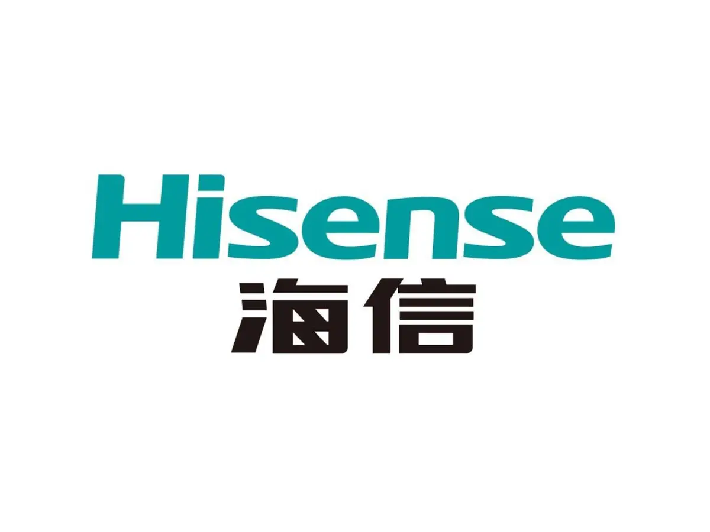
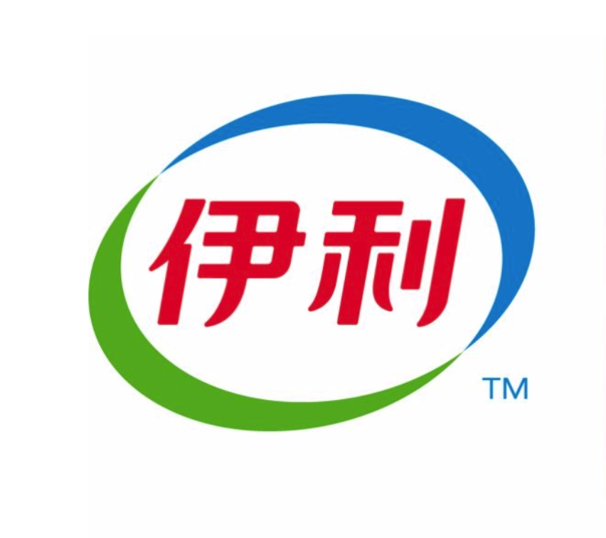
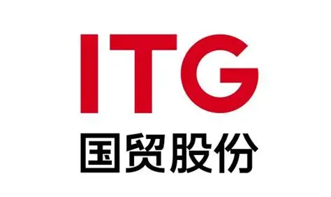
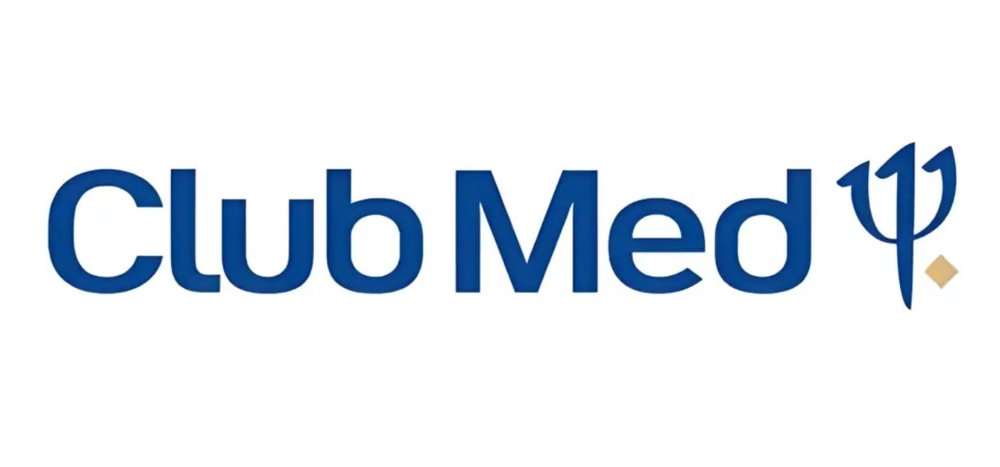
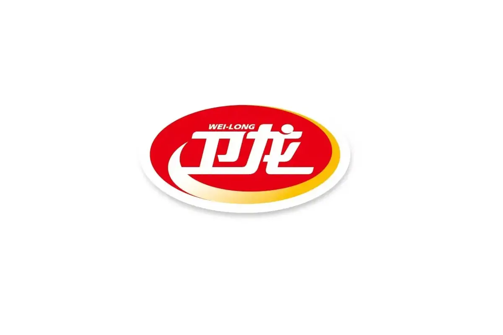
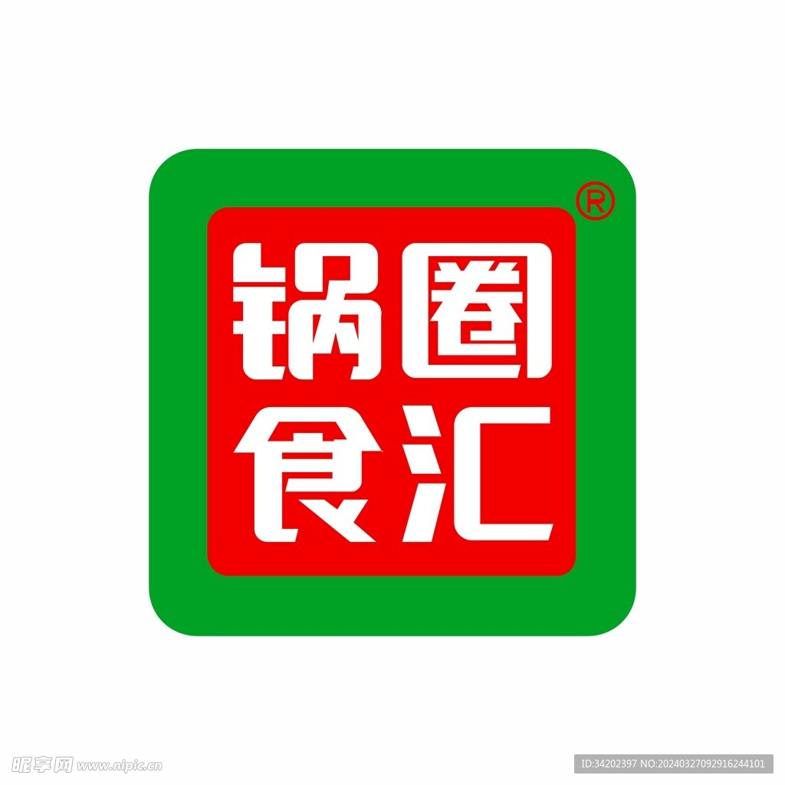
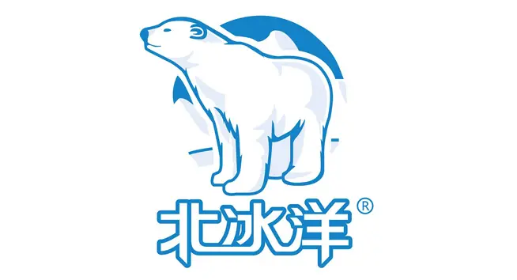

- 2021
- 创立于北京
- 100
- 跨学科团队成员
- 备案
- 自研大模型通过网信办备案
- 35B
- Frontis-MA1 开放模型
通用智能之后，
真正稀缺的是专业。
大模型让“回答”变得随手可得。企业真正愿意托付的，是理解业务边界、经得起检验、并且越用越强的能力。
-
01 / OUTCOMES
从给出回答，
到交付结果。专业 AI 的价值不在一次对话，而在能否进入业务流程，承担有验收标准的真实任务。
-
02 / EVIDENCE
从凭借感觉，
到有据可循。由专家定义“什么是好”，再把它写成可执行的评测。每一个结论都能追溯来源、交由人复核。
-
03 / COMPOUNDING
从一次交付，
到持续复利。经过验证的方法沉淀为技能与模板，成为下一轮的起点。能力随使用增长，而不是随项目结束清零。
从模型到业务，
一条专业智能的生产线。
衔远的产品不是彼此孤立的工具，而是同一套体系的三个层次：基座提供专业判断，引擎负责生产与进化，应用把能力送进每一个岗位。
三层共享同一套评测标准、经验沉淀与进化机制：任何一层的进步，都会传导到整个体系。
能力不是交付出来的，
是在验证中长出来的。
人定义目标与标准，AI 承担评测、实验与迭代。每一轮循环都留下可以复核的依据，让下一轮从更高处开始。
把“好”写成可执行的标准。
专家确认业务目标，历史数据与异常案例成为专业评测的依据。
两类使用者，
同一个进化引擎。
为构建专业 AI 的团队，提供生产与进化的工具；为使用专业 AI 的组织与领导者，提供开箱即用的智能体验。
为构建者 · FOR BUILDERS
MetaAgent 元智能体
- 面向
- 企业 AI 负责人与业务负责人
- 能力
- 把业务目标、数据与约束组织为评测任务，协调候选探索、实验与验证，按授权复用方法与技能。
- 交付
- 可执行的评测任务 · 可复核的进化记录
Agent 评测及进化平台
- 面向
- 智能体研发与业务验收团队
- 能力
- 以真实任务与验收标准共建评测集，对候选方案开展实验、比较结果；关键发布由专家确认。
- 交付
- 评测集 · 测试记录 · 版本说明与回滚依据
AI4ML 专业模型训练平台
- 面向
- 算法、数据与研发团队
- 能力
- 把业务目标拆成可评测的建模任务，融合专业数据与专家知识，并行实验、依据评测反馈比较方案。
- 交付
- 专业模型 · 评测报告 · 可复现实验记录
在最难的现场，
检验专业智能。
从芯片到菌株，从港口到门店：专业 AI 在真实任务中接受检验，由专业人员负责关键复核与发布。
从芯片设计，
到封装测试协同。
连接设计规格、EDA 工具与工程数据，辅助设计仿真、跨工艺适配和材料耗用核对。保留分析依据，支持工程师复核与质量异常排查。
BOM Agent 1.0 已向封测客户开放使用，核对 MES / ERP、实物盘点及 BOM 与实际消耗，形成偏差清单与排查依据。
具体能力、指标与部署方式，随任务、数据与业务环境而变化，依据项目需求评估。
服务真实业务，
与领先企业共同验证。
部分已服务客户







把前沿，
放在可以检验的地方。
模型、代码与可复现实验公开发布。我们相信，专业智能的可信，始于研究本身的可检验。
Frontis-MA1
面向机器学习工程自我改进的 AI4AI 模型。
Hugging Face ↗ 02 / FRAMEWORK · CODEOpenRSI
面向 AI 递归自我改进的开放研究，含 OpenMLE 可复现实验。
GitHub ↗ 03 / RESEARCH · NEURIPS 2025TTRL
测试时强化学习，探索智能在推理阶段的自我改进。
GitHub ↗- 2022提出通专融合GENERALIZED–SPECIALIZED SYNERGY
- 2024SAGE 架构FOUNDATION · SYNERGY · EVOLUTION
- 2025MetaAgent 技术路线EVALUATION · EXPERIMENTS · EXPERIENCE
- 2026Frontis-MA1 发布35B / AI FOR AI
让企业进入 AI
「自动驾驶」时代。
2021 年，衔远科技创立于北京。我们以 AI for AI 为方向，汇聚研究者、工程师与行业专家，让专业 AI 从一次性交付，走向持续进化。
- BEIJING
- SHANGHAI
- XIAMEN
20 余年 AI 研究与产业化经验，推动「通专融合」技术路线，连接科学前沿与产业实践。
您可能关心的问题
衔远与通用大模型有什么不同？
通用大模型提供广泛的基础能力。衔远以「通专融合」把行业知识、专家规则与业务数据结合进来，并通过评测与实验持续验证，让能力具备专业判断、可以复核，并随使用不断积累。
MetaAgent 在体系中扮演什么角色？
MetaAgent 是专业 AI 的“生产调度者”：把业务目标转化为可验证的任务，协调评测与实验，并把有效经验沉淀为可复用的技能与模板，驱动 Agent 与模型持续进化。
衔远大观、Leadeep AI 与 MetaAgent 是什么关系？
它们属于同一套体系。MetaAgent 及评测、训练平台负责生产与进化专业能力；衔远大观与 Leadeep AI 是面向组织和领导者的应用，把这些能力送进日常工作。
企业可以从哪里开始合作？
建议从一个高价值、有明确验收标准的业务任务开始：先与专家共同定义“什么是好”，再共建评测与演示方案。实施范围、验收标准与部署方式由双方确认。
数据与部署如何安排？
数据、评测与模型部署围绕企业自己的业务边界展开；训练、算力及部署方案依据项目需求，由双方共同评估确认。
你的专业，
值得拥有自己的 AI。
从一个高价值任务开始，让专业智能在你的业务里生根、验证、生长。